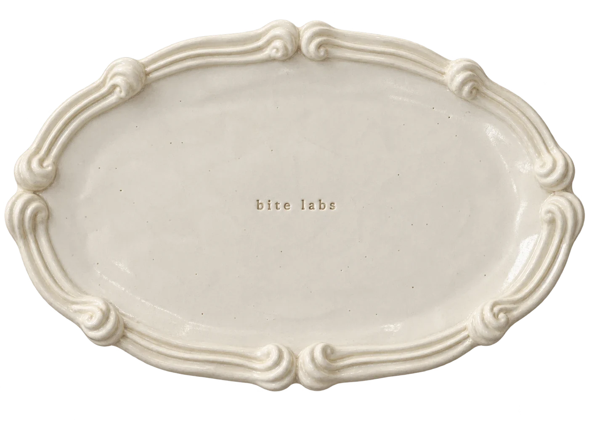
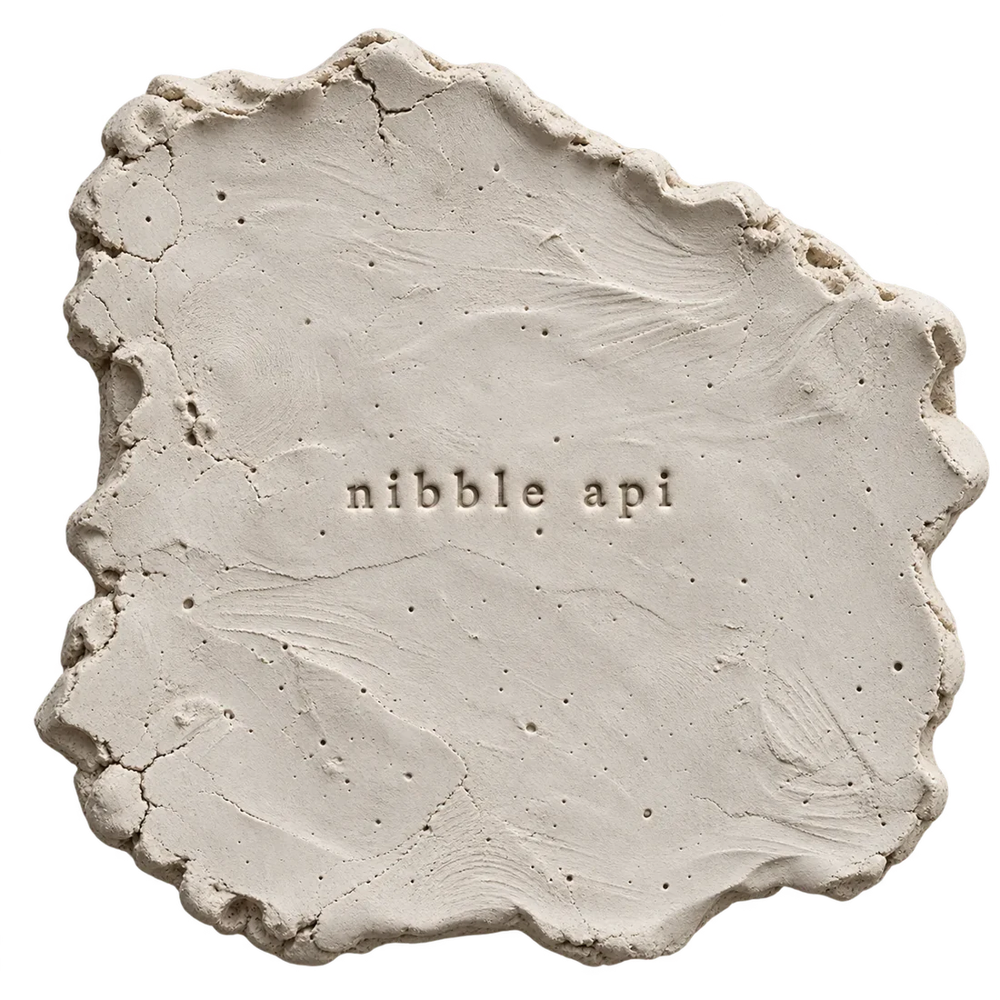

introducing nibble ······ the reinforcement learning api

smoothest training for any model
fun training, for everyone
Today the best reinforcement learning stacks live inside a few labs with thousands of GPUs. Everyone else rebuilds the same plumbing, loses days to out-of-memory errors and pays for cards that sit idle.
Training should be transparent, fast and cheap for any lab, with eight GPUs or eight thousand. We run the hard parts so that every team can train at the frontier.
Training should be fun again. You write the reward and the idea. We handle the out-of-memory errors, the placement and the failures.
a badge of fairness
A lab says its agent broke out of the sandbox. Was that the model, or a door the lab left open? Today nobody outside the lab can check.
Every nibble run keeps a record anyone can audit. A sandbox error is recorded as a sandbox error, never as the model's success, and each record is written once and never overwritten. Publish the record, show the badge, and let readers check the claim for themselves.
A fingerprint (SHA-256) of the exact sandbox and reward code that ran.
A fingerprint of every setting, so two runs that share it ran the same way.
Every rollout with its outcome: the model's own action, a sandbox error, or a timeout.
The badge shows what ran and how each rollout ended. It does not prove that a sandbox has no holes; it lets anyone look for them.
five fields to start. every setting when you need it.

import nibble # five fields start a run run = nibble.train( model = "r1-distill-qwen-1.5b", reward = my_reward, # answer -> score dataset = "deepscaler", algorithm = "grpo", # or "ppo" gpus = 4, # yours or ours ) # any other setting, when you need it run = nibble.train( ..., sampling = {"temperature": 1.0, "max_new_tokens": 32768}, batch = {"prompts": 64, "answers_per_prompt": 8}, schedule = {"updates": 15, "max_staleness": 2}, monitor = {"alarm": 0.999}, ) run.watch() # each update as it lands run.report() # hours, cost, accuracy
Model, reward, data, algorithm and GPUs. That is a complete run.
Every setting the trainer honours is one key away: sampling, batch shape, staleness, caches, placement.
A misspelled key or a clash between settings fails before launch, with the field and the fix in the message.
The code above is a sketch of the api's shape. Field names may change before release.
1.8× faster,
45% cheaper.
*ppo, 15 updates, against synchronous rl on the same 3 × A100 80GB. cheaper means fewer gpu-hours. proof below.
vs open-source async rl and synchronous rl · deepseek-r1-distill-qwen-1.5b · 32k-token reasoning · 15 rl updates
ppo · hours to train
> 1.8× faster than sync · 7% faster than open-source async
grpo · hours to train
> 1.6× faster than sync · 11% faster than open-source async
ppo · gpu-hours per run
> 45% cheaper than sync · 7% cheaper than open-source async
grpo · gpu-hours per run
> 35% cheaper than sync · 7% cheaper than open-source async
gpu-hours = 3 gpus × hours to train. At $2.50 per A100-hour, a ppo run costs $21.00 with nibble, against $38.25 synchronous.
ppo · aime 2024 solved
> highest of the three
trained tokens / second · higher is better
+6.6% vs open-source async, same settings +15.9% vs its defaults
guest@nibble:~$ every nibble run beat every baseline run
frequent updates · 8 prompts × 8 answers per update · 15 grpo updates · 2–3 runs per system · mean of steps 2–15. nibble's engine tuning is applied to the baseline here, so the gap is nibble itself: unfinished answers keep their kv cache when the weights update.
strong monitorability, without slowing you down
A timeout can look like a wrong answer, and a broken grader can look like a bad policy. We catch the change while it is still cheap, so you stop paying for steps that teach the model nothing.
Every step updates the probability that your run has been polluted. The alarm fires at 99.9%, so a false alarm before a real change is at most a 0.1% chance.
The check reads the records your run already writes, in a separate process. The training loop never waits for it.
of audited early trajectories held a sandbox failure in one team's coding-agent training.
of rollouts were invalidated by timeouts alone, before that team fixed its images.
sandbox error rate after the fixes. The problems were fixable once someone saw them.
median alarm delay once failures rose to 20%, in 50 simulated runs.
The first three figures are one team's reported rollout statistics (KAT-Coder-V2.5 report, section 4.2.2), not an industry-wide rate, and the improvement came from that team's own fixes. The alarm delay is from simulated runs: at a 5% failure rate, 43 of 50 runs raised no alarm within 150 steps.
gpu spend avoided per incident
$1,120
64 gpus × $2.50 per hour × 7 hours of avoided waste
gpus × rate × max(0, hours without an alarm − hours to the alarm − recovery hours). The rate and times are assumptions you can change, not a quote or a measurement. It is gross compute value: labour, storage and earlier lost work are not counted.
k failed rollouts out of n in a step. This is the Shiryaev change detector. In production each step's evidence is also divided by a design effect, so a burst inside one prompt group counts once. The simulation draws failures at 2% before the fault at step 150 and at the chosen rate after it.
Want early access, or want to train with us? Say hi.
reach out here